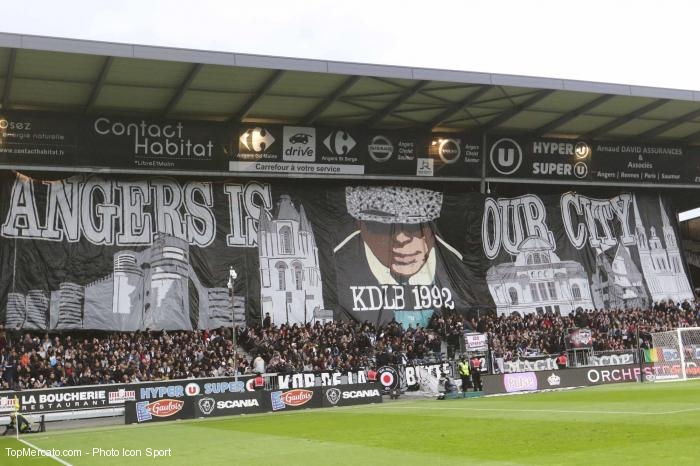

À propos de moi
Découvrez qui je suis, mon parcours et mes passions.
Mon Histoire
Je m'appelle Nolan Fontaine, j'ai 21 ans et je suis passionné de sport et de découvertes depuis toujours. J'ai pratiqué le football pendant plus de dix ans en club, un sport qui m'a appris la rigueur, la persévérance et le sens du collectif. En parallèle, je suis également un grand amateur de voyages, une passion qui nourrit ma curiosité et mon ouverture sur le monde.
Actuellement, je suis étudiant en BUT Science des Données à l'IUT de Niort. Avant cela, j'ai obtenu mon baccalauréat avec les spécialités Mathématiques et NSI (Numérique et Sciences Informatiques), avec la mention Bien. J'ai d'abord débuté un BUT Informatique à La Rochelle, mais mon goût prononcé pour les chiffres et la logique analytique m'a naturellement poussé à me réorienter vers ce cursus plus statistique.
Le BUT Science des Données propose une formation complète mêlant statistiques, informatique décisionnelle, analyse de données et modélisation. C'est un domaine en pleine expansion qui m'offre l'opportunité de développer une double compétence très recherchée : la maîtrise technique des outils informatiques (Python, SQL, R) et la capacité à interpréter intelligemment les données.
Je suis quelqu'un de rigoureux, curieux et à l'écoute. J'aime travailler en équipe, une force héritée de mes années sur les terrains de football, tout en sachant faire preuve d'autonomie lorsque c'est nécessaire. Ces qualités me permettent de m'investir pleinement dans mes projets et de toujours viser l'excellence, quel que soit le contexte.
Sur ce site, vous trouverez une page dédiée à mes projets, où je partage certaines de mes réalisations académiques et personnelles. Ces expériences m'ont permis de mettre en pratique mes compétences en traitement de données et en modélisation.
Ma Passion pour le Football
En dehors de mes études, j’ai longtemps été passionné par le football. J’ai pratiqué en club pendant 10 années dans des clubs de la périphérie d’Angers.
Même si j’ai arrêté la pratique active depuis, ce sport m’a beaucoup apporté. Il m’a enseigné des valeurs essentielles telles que la discipline, l’esprit d’équipe, la persévérance et le sens de l’effort. Ces expériences ont contribué à forger ma rigueur et ma capacité à relever les défis.
Aujourd’hui, le football reste une passion profonde. Je suis un fervent supporter d’Angers SCO, le club de ma ville, et je suis avec enthousiasme chaque match. Ce sport rassemble les gens et crée des émotions uniques que j’apprécie toujours autant.

Mes Voyages
Une ouverture sur le monde et les différentes cultures.